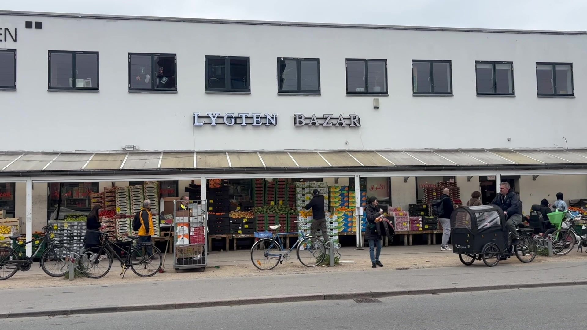
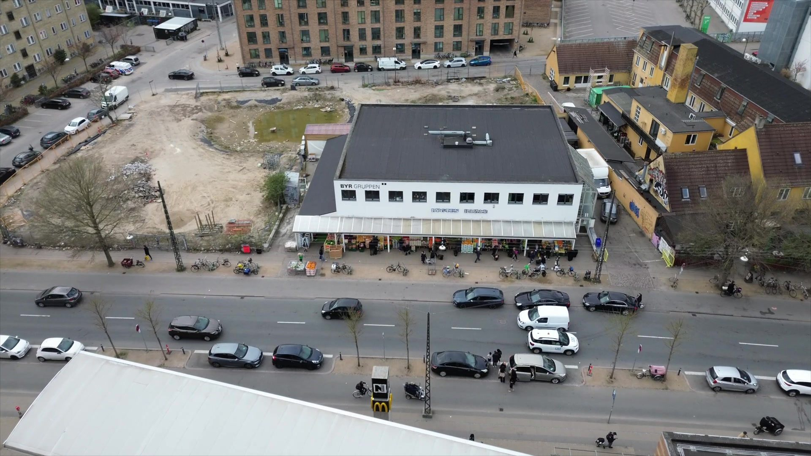
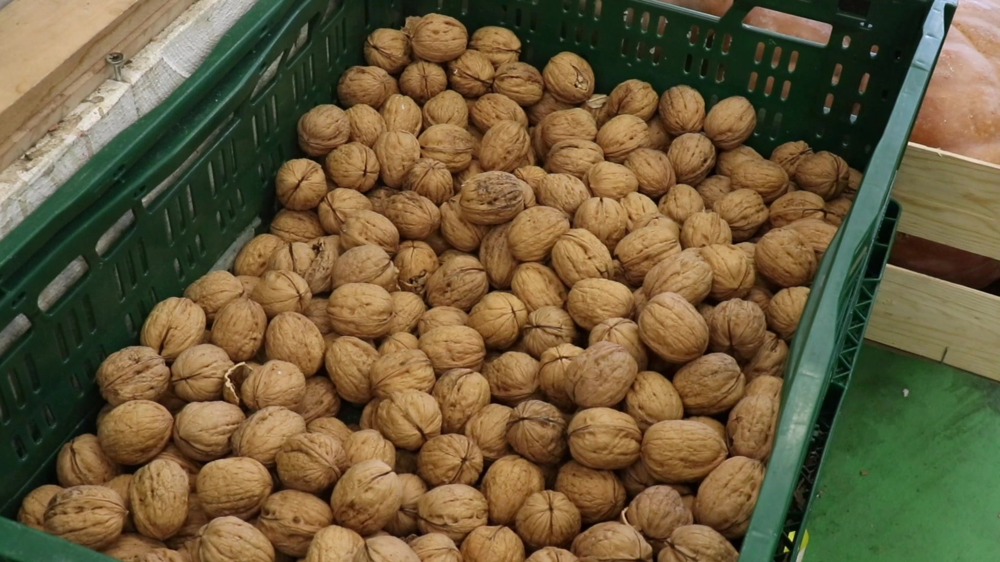
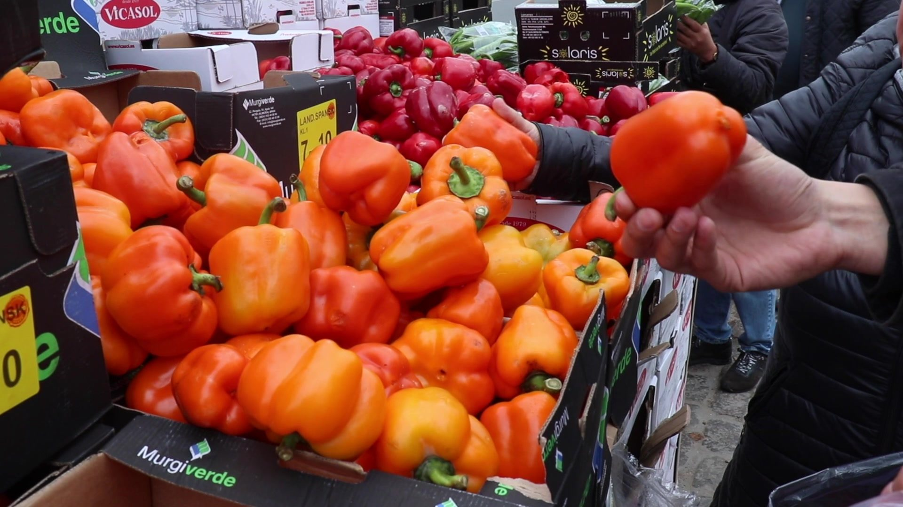
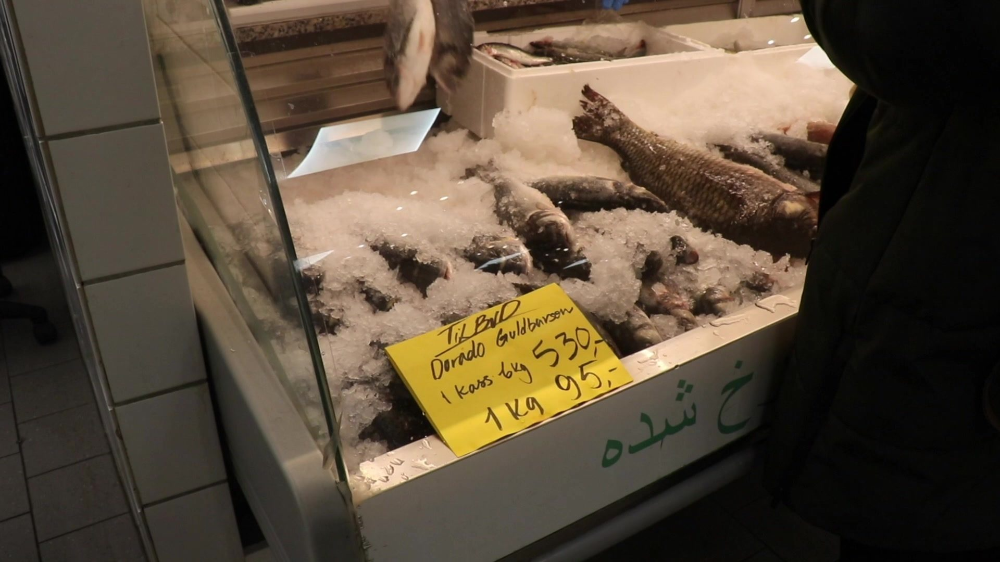
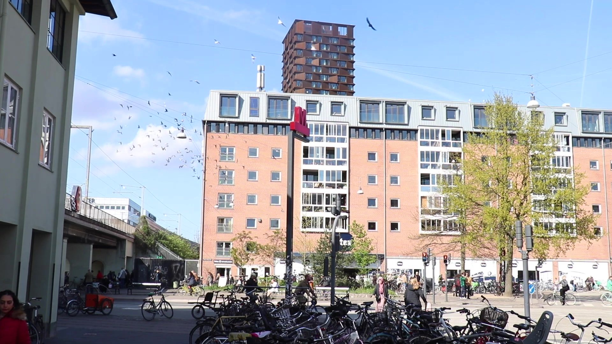

Video ethnography · Cities, Culture & Politics · 2025
Lygten Bazar
Lived multicultural urbanism in Nørrebro
About the project
This video project was produced as part of the course Cities, Culture & Politics in the Nordic Urban Planning Studies programme at Roskilde University. The course examines how urban spaces are shaped by the interaction of culture, economy and power, and how everyday places reveal broader political and social dynamics in cities.
Our project focused on Lygten Bazar in Nørrebro, Copenhagen, a local market that functions as more than a place to buy groceries. The bazar brings together diverse cultural backgrounds, products and practices, creating a space where economic exchange, social interaction and cultural identity are closely intertwined. It attracts both people seeking familiar goods from their countries of origin and others looking for an intercultural urban experience.

Approach
The video explores the bazar as a lived urban space rather than a branded or curated one. Due to filming restrictions, we avoided showing faces and instead focused on textures, sounds, movements and everyday interactions. This shifted our attention to how people navigate the space, how informal routines emerge, and how a sense of atmosphere and belonging is produced through ordinary practices.
Through filming and interviews, the project also revealed tensions surrounding visibility, gentrification and urban branding. While Lygten Bazar represents a grassroots cultural economy, it exists within a city increasingly shaped by redevelopment and marketing strategies. The video therefore reflects both the vibrancy of everyday multicultural urban life and its fragile position within wider urban transformation processes.




Interested in ethnographic methods in planning, or simply in Nørrebro? I am happy to hear from you.
Write me: lennart.reichow@gmail.com